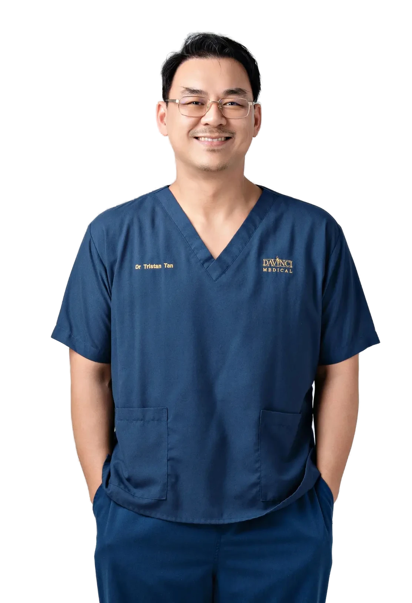
Your aestheticclinic inKuala Lumpur
4 clinics
Mid Valley · Bukit Jalil · Cheras · TRXacross Kuala Lumpur
Doctor-led skin and aesthetic care, trusted by patients across Malaysia since 2006. Every treatment begins with an honest clinical consultation, not a sales pitch.
Mastering the art of science and unlocking timeless beauty
Years of doctor-led aesthetic care in Kuala Lumpur
0
Clinics across KL: Mid Valley, Bukit Jalil, Cheras and TRX
0
Industry awards and recognitions listed by the clinic
0
Treatments our patients come for
Three of the five DV™ signature protocols. Every one starts with a doctor’s assessment.
Non-surgical facelift
Ultherapy Prime, HIFU, Oligio X, XERF and Density to lift, tighten and contour without surgery.
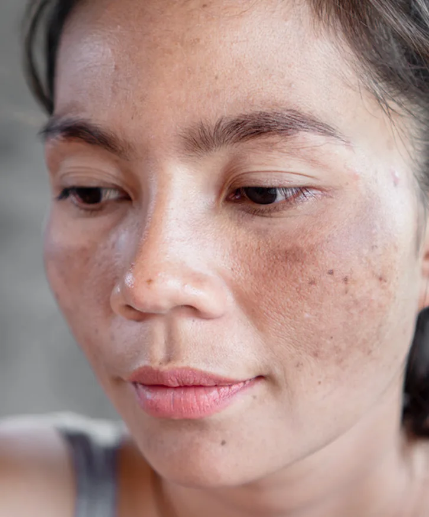
Pigmentation and pico laser
PicoSure Pro, PicoWay and Fotona StarWalker for melasma, sun spots and tattoos.

Skin glow and skin boosters
Profhilo, Rejuran, Plinest, SKINVIVE and exosomes for hydration and texture.
Doctor-led care since 2006
What stays the same whichever treatment you choose.
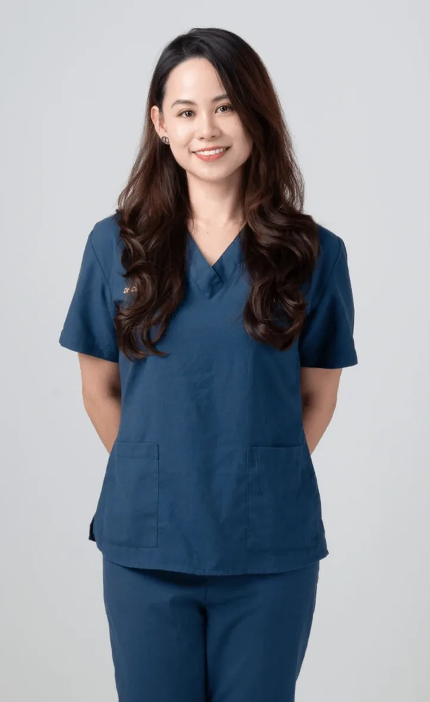
Award-winning technology
The first clinic in Malaysia to own PicoSure Pro, and an authentic Ultherapy Prime and Thermage provider.
Transparent consultation
Every journey starts with an honest medical consultation. Pricing is discussed openly based on your needs.

LCP-certified doctors
Our doctors hold the Ministry of Health’s LCP credential and train other doctors across the Asia-Pacific region.
FDA-cleared devices
Energy devices are FDA-cleared and injectables come from the original manufacturers, never grey imports.
Personalised care, not a treatment menu
Da Vinci treatments are built as protocols around you rather than sold one machine at a time.
• Detailed consultation with an LCP-certified doctor
• Skin assessment before any recommendation
• Tailor-made treatment plan and open pricing
• Post-treatment care and follow-up reviews
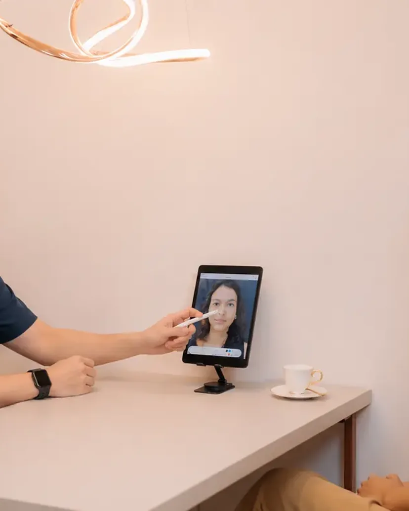
Your treatment journey, step by step
The same four steps at every Da Vinci clinic, so you always know what happens next.
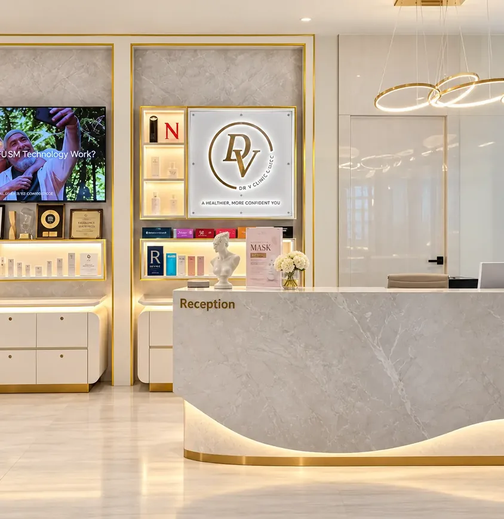
Consultation
A doctor assesses your skin and listens to what you want to improve. No sales consultant.

Tailor-made treatment
Pricing explained before anything starts. FDA-cleared devices and authentic injectables only.

Skin assessment
Skin analysis and a treatment plan matched to your concern, skin type and lifestyle.
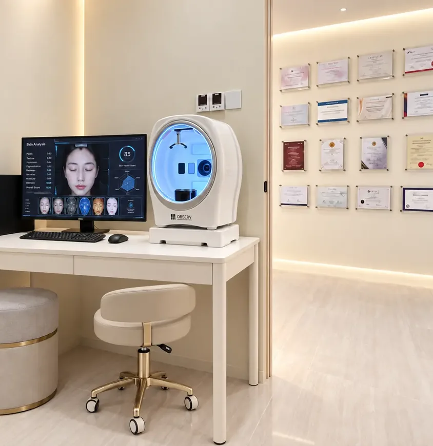
Post-treatment care
Aftercare advice, follow-up reviews and BIO.CX375 skincare to protect your results.
Five DV™ protocols, one plan for you
Each signature treatment combines several technologies in a fixed sequence, adjusted to your skin after assessment.


Ways to start
Three simple ways to begin, with no invented prices: your doctor quotes after assessment.
Free
Doctor-led skin assessment
Clear options and pricing
Any of our four KL clinics
No obligation to proceed
“Honest advice first, treatment second.”
Up to 50% off
Facelift and skin tightening
Pigmentation and acne scars
Active acne and hair loss
Vaginal rejuvenation
“For first-time patients on selected laser treatments.”
20% off
treatments & productsValid 1 Aug 2026 to 31 Jul 2027
Birthday RF skin tightening worth RM800
Yellow laser worth RM800 for first-timers
Redeemable at all four clinics
“Terms apply, see HSBC Smart Privileges.”
Meet the Da Vinci doctors
LCP-certified aesthetic physicians who assess first and recommend second, across four clinics in Kuala Lumpur.
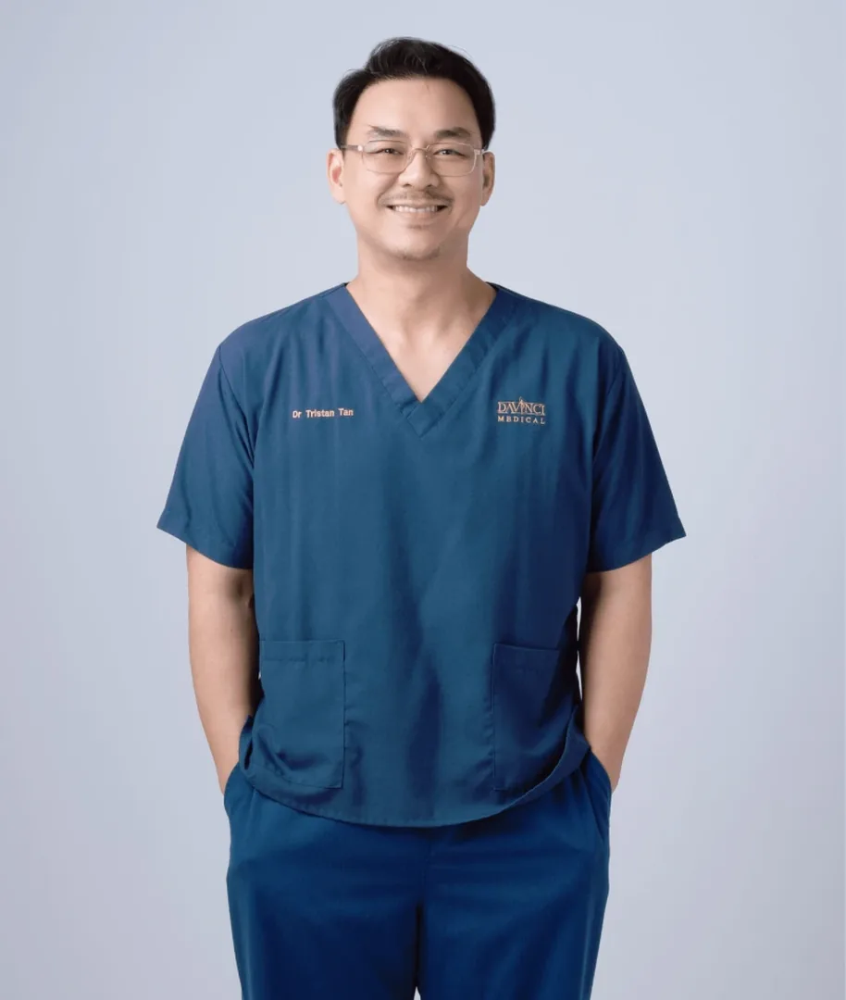
Dr. Tristan Tan
Director & Founder
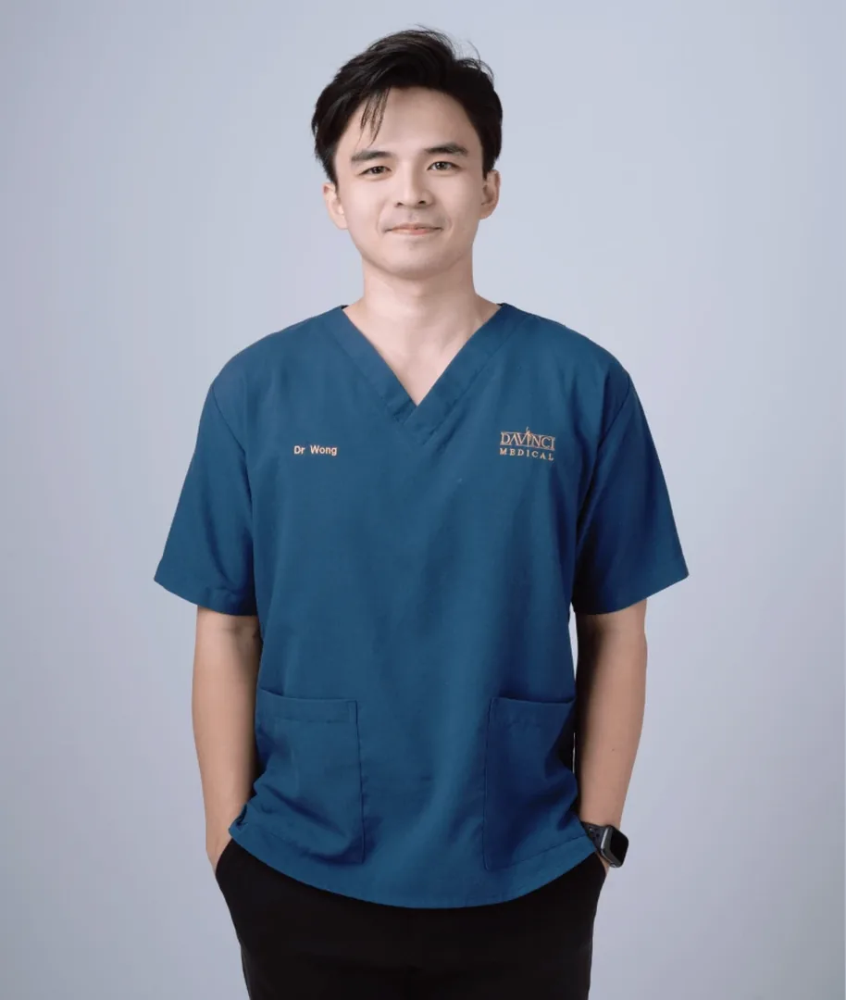
Dr. Wong Yeut Sun
Clinical Director, Bukit Jalil
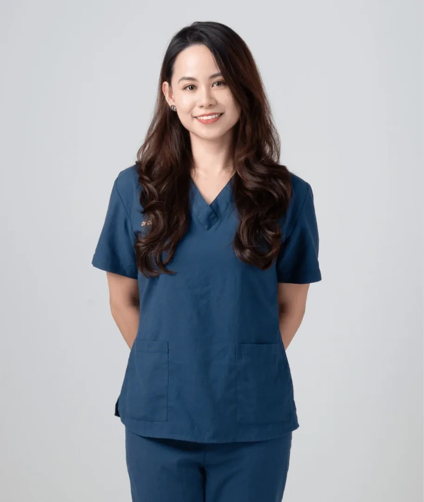
Dr. Joycelyn Loh
LCP-Certified Doctor, Cheras
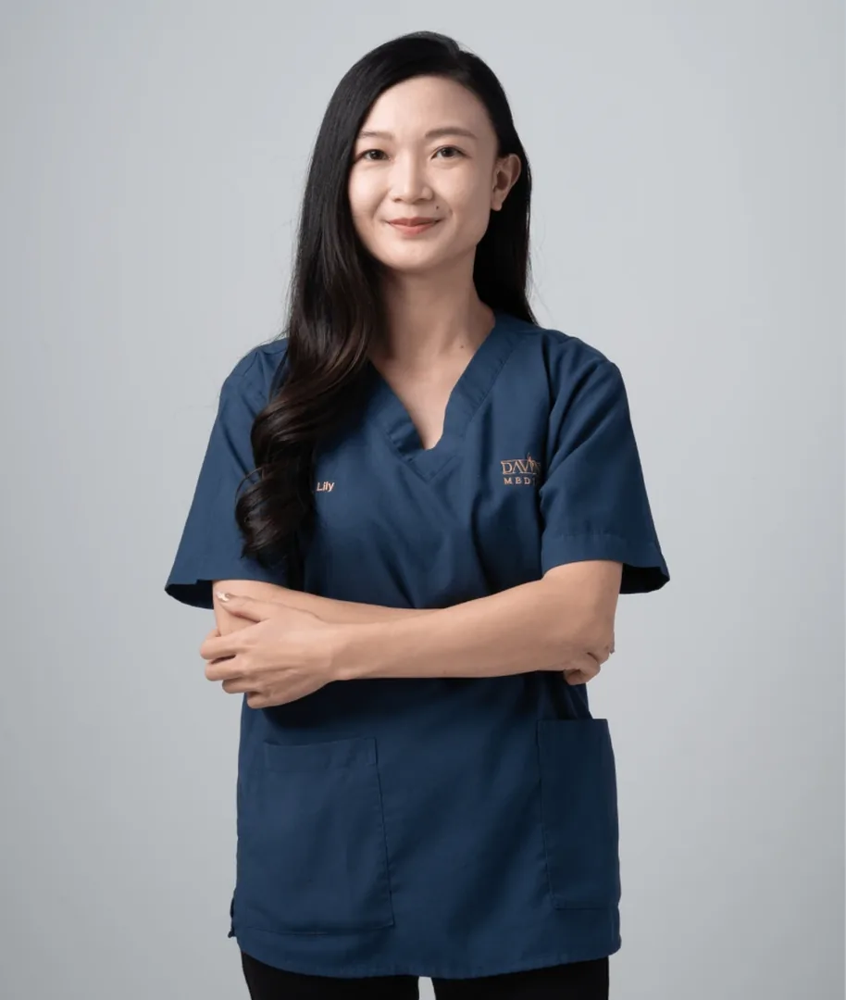
Dr. Tang Yee Li
LCP-Certified Doctor, Bukit Jalil
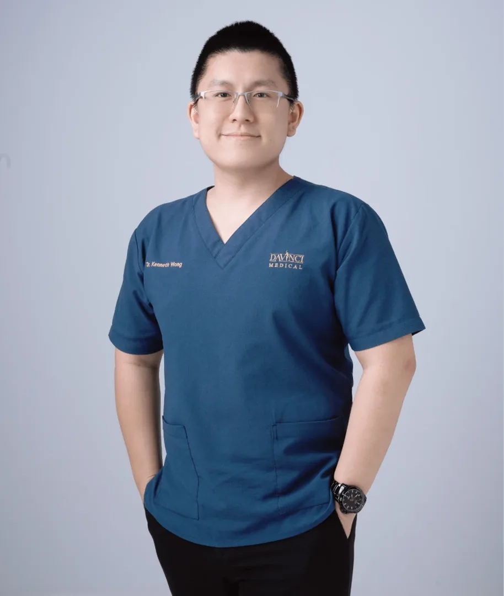
Dr. Kenneth Wong
Lead Doctor, TRX
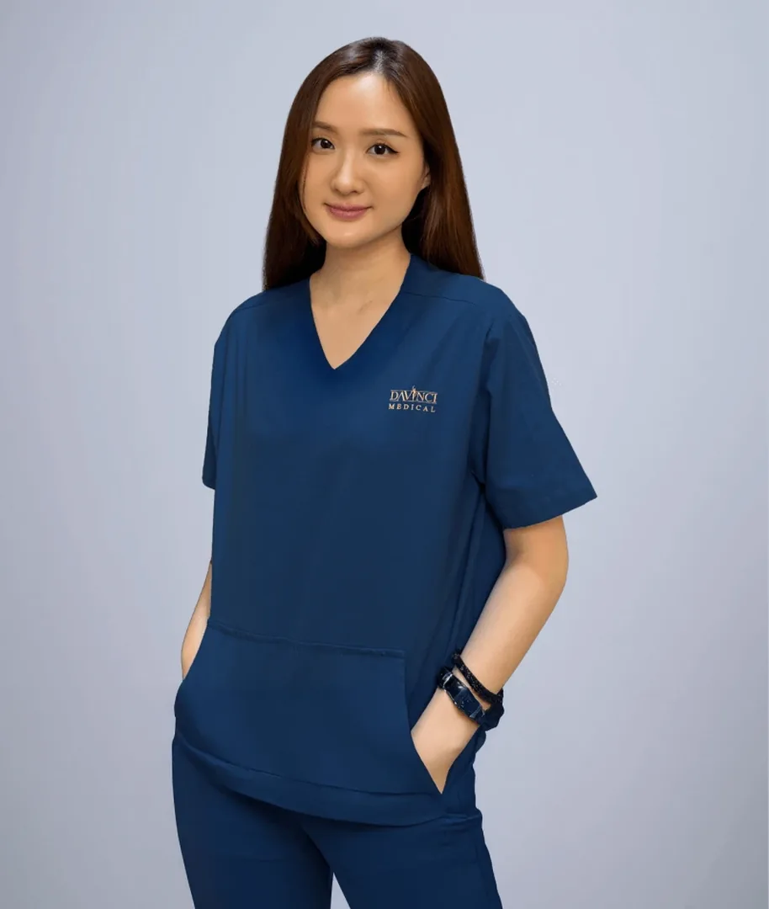
Dr. Ho Shuyan
LCP-Certified Doctor
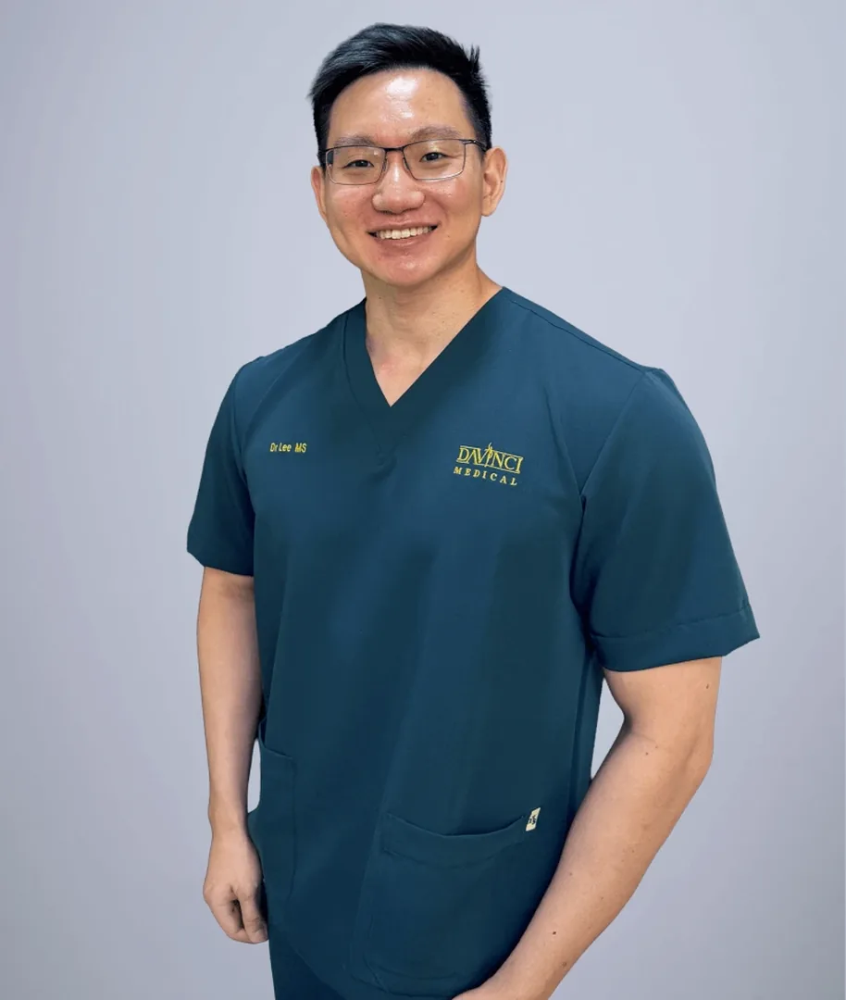
Dr. Lee Mao Sheng
Aesthetic Doctor, Mid Valley
What our patients say about us
Real Google reviews from patients of our Mid Valley clinic, quoted as written.
Unlocking timeless beauty
Da Vinci Clinic’s tagline since 2006, and still how every treatment plan is written.
Your questions, answered clearly
Common questions about booking and visiting Da Vinci Clinic.
Four clinics in Kuala Lumpur: Mid Valley (The Boulevard Offices), Bukit Jalil (DV Prestige, Bukit Jalil Signatures), Cheras (Taman Connaught) and TRX (Menara Exchange 106). Addresses, phone numbers and WhatsApp links are in the footer.
Monday to Friday 10:00am to 7:00pm, Saturday and Sunday 10:00am to 5:30pm, at every branch.
No. Your first visit is a clinical assessment by a doctor, not a sales consultant. Options and pricing are laid out clearly and you decide.
Our aesthetic physicians hold the Letter of Credentialing and Privileging (LCP) from the Ministry of Health Malaysia, the standard for aesthetic practitioners, and several train other doctors for Merz, Fotona, Neauvia and Plinest.
Yes. Energy devices are FDA-cleared and every injectable is sourced from its original maker. Da Vinci was the first clinic in Malaysia to own PicoSure Pro, recorded by the Malaysia Book of Records.
WhatsApp the branch closest to you, call, or use the form on the contact page. Walk-in consultations depend on doctor availability, so booking ahead is best.
Skin and aesthetic insights
Plain explanations of treatments, written by the Da Vinci team.


Start your beauty journey today
Every treatment begins with an honest clinical consultation at any of our four Kuala Lumpur clinics. No pressure, no upselling.